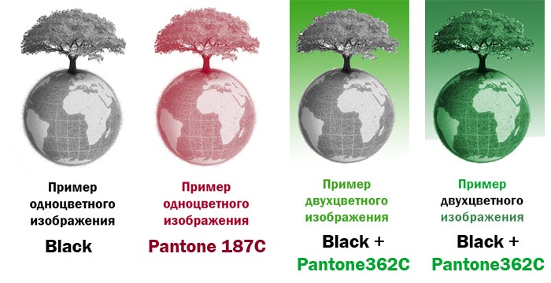
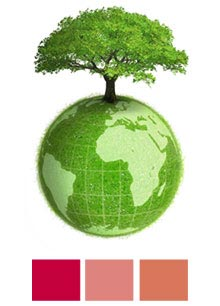

В этой статье мы поговорим об одном из основных параметров, определяющих себестоимость печати рекламных изданий — цветности печати. Полноцветная печать, несмотря на свою привлекательность и универсальность не всегда является оптимальным выбором. Как определить количество красок? Как сэкономить на тираже и сделать издание оптимальным по себестоимости и эффективности?
Как обозначается цветность издания?
В полиграфии принято обозначать цветность тиража парой цифр, разделяя их знаком «+». Первая цифра обозначает количество используемых красок (краскопрогонов) с лицевой части листа, вторая — соответственно красочность оборота. К примеру 3+2 расшифровывается как 3 краски на лицевой части издания и две на обороте. Цифра 4 обозначает полноцветное изображение (стандартная модель печати — «CMYK» ), 0 — отсутствие печати. Образцы полиграфической продукции с обозначением цветности можно посмотреть в разделе портфолио.
Цвета CMY (голубой, малиновый, желтый) — основополагающие в полноцветной (4–х красочной) офсетной печати и называются триадными. Черная краска (K) в этой триаде является дополнительной, задача которой подчеркнуть «глубокие» цвета, например темно-синий, или насыщенный черный, которые основные цвета не смогут обеспечить, выдавая грязные оттенки.
Стандартная модель печати в четыре краски (CMYK) иногда дорога, иногда не может передать какой-то оттенок цвета. Для компенсации этих нюансов в полиграфии есть дополнительная шкала цветов Pantone, которая, с одной стороны, компенсирует недоступные CMYK цвета, с другой — помогает сэкономить на печати изданий в специфической цветовой гамме. Цветовая модель Пантон, система PMS (Pantone Matching System) — стандартизованная система подбора цвета, разработанная американской фирмой Pantone Inc в середине XX века. Использует цифровую идентификацию цветов изображения для полиграфии печати как смесевыми, так и триадными красками. Эталонные пронумерованные цвета напечатаны в специальной книге, страницы которой веерообразно раскладываются.
Использование красок Pantone может как удорожить тираж, если используются совместно с красками CMYK для более широкого цветового диапазона (например флуорисцентные или металлизированные оттенки), так и получить значительную экономию при изготовлении тиража рекламных буклетов или фирменных каталогов за счет использования ограниченного количества цветов, подобранных с помощью палитры Pantone.
Использование Pantone для удешевления тиража
Немного практики: требуется напечатать фирменный бланк с нанесением на одну сторону листа логотип с корпоративным оттенком красного (в брендбуке указан как Pantone 186С) и черным цветом текста с реквизитами компании. Заказывать полноцветную печать в данном случае будет явным расточительством. Достаточно будет использовать смесевую красную краску по шкале Pantone и отпечатать тираж в два цвета (2+0). Это яркий пример использования смесевых красок, при котором снижается себестоимость тиража практически вдвое.
Итак, с применением цветовой палитры Pantone обычно печатается корпоративная продукция, требующая строгого соответствия цветовой гамме компании.
Другой пример использования печати в несколько цветов каталоги продукции с технической информацией. Обычно это объемные издания и полноцветная печать обходится слишком дорого. Наиболее рациональный выход — использование одного основного цвета (обычно черного как наиболее контрастного) и дополнительного цвета нужного оттенка для выделения важной информации.
Еще один пример — использование металлизированных красок (серебра, золота, бронзы) и цвета, которые невозможно напечатать стандартными красками.

Одним цветом (краскопрогоном) считается краска одного тона, при этом возможно изменение ее насыщенности. Примеры одноцветных и двухцветных изображений приведены ниже.
В последнем примере тон меняется засчет черной краски, поэтому изображение считается двухцветным. Как подготовить такое изображение будет рассмотрено в другой статье.
Теперь рассмотрим другой пример, когда изображение выглядит двухцветным, но на самом деле напечатать его без искажения возможно только полноцветной печатью в 4 краски.

Цвет дерева и земного шара — зеленый, казалось бы, можно взять зеленый цвет Pantone, подобрать темный цвет ствола и веток и можно печатать, но, к сожалению, это невозможно — на изображении меняется не только насыщенность цвета, но и его тон. Где-то зеленый более теплый (желтоватый) где-то более холодный (с синевой). Поэтому в данном случае необходимо использовать только полноцветную офсетную печать. Более явно это демонстрируют квадраты под изображением. Первый квадрат — исходный цвет, второй — уменьшение насыщенности от первого, а вот третий — не вписывается в этот ряд, он имеет намного более теплый оттенок.
Использование печати в несколько цветов сложно лишь на первый взгляд, при правильной подготовке файла результат будет виден сразу, и, при некоторой тренировке можно добиться достаточно эффектной печати, сэкономив бюджет рекламного издания.